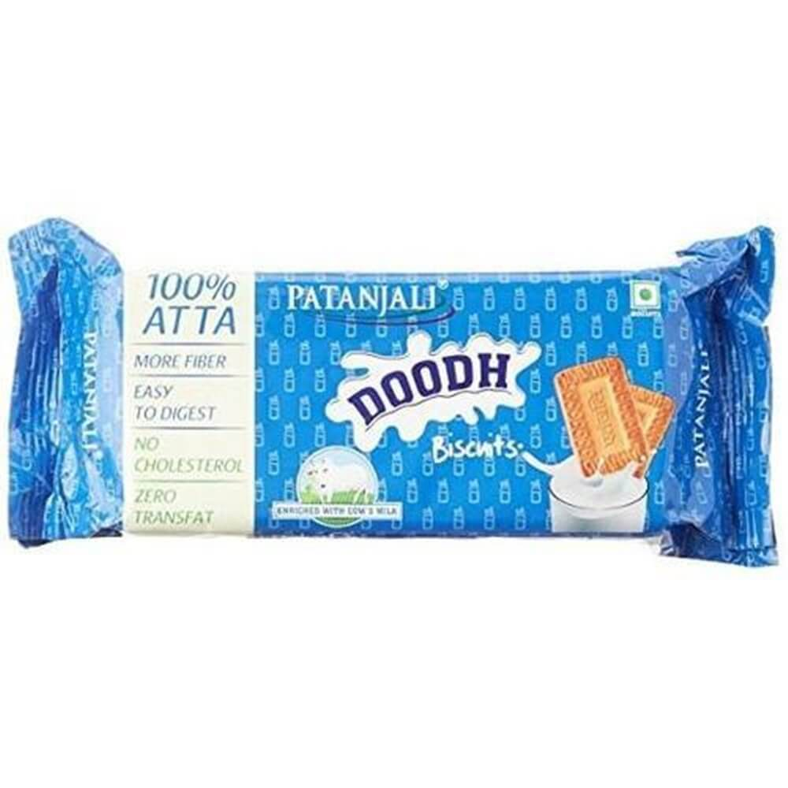

|
|
Patanjali Products Canada Inc |
Home
| IMAGES | DESCRIPTION | LINKS |
|---|---|---|
|
Patanjali Paushtik Marie Biscuit is enriched with minerals and vitamins. |
||
|  |
Patanjali Doodh Biscuits are made from pure atta and cow’s milk which is full of fiber. It has no added colours, no maida & natural identical flavours. It can take any time as it has zero per cent cholesterol, zero per cent trans fat. |
|
|
Patanjali Digestive Cookies are made from pure atta which is full of fiber and easy to digest. It has no added colours, no maida & natural identical flavours. It can take anytime as it has zero percent cholesterol, zero percent trans fat. |
||
|
Patanjali Aarogya Biscuits are made from pure atta which is full of fiber and easy to digest. It has no added colours, no maida & natural identical flavours. It can take any time as it has zero percent cholesterol, zero percent trans fat. |